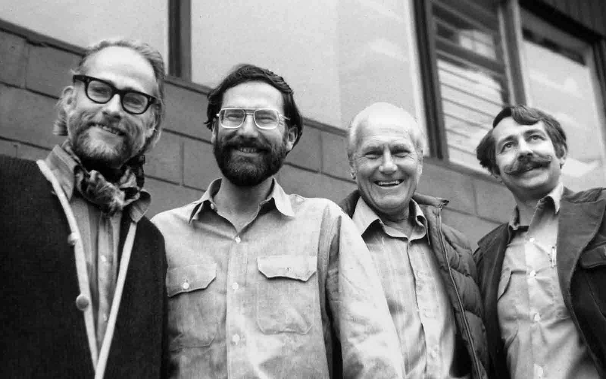

Піонери пригодницьких подорожей
У 1969 році троє відважних альпіністів-дослідників, Лео Ле Бон, Аллен Стек і Баррі Бішоп, виступили з радикальною на той час ідеєю: створити бізнес на основі їхньої невиліковної жаги мандрівок до всесвітніх пригод, спільними подорожами у віддалені райони, де єдиним способом доступу був піший шлях. Їхнє підприємство було названо Mountain Travel, і з ним зародився бізнес «пригодницьких подорожей». Приблизно в той самий час Річард Бенґс, Лью Грінвальд і Джон Йост сплавлялися першими річками по всьому світу. У 1973 році вони створили Sobek Expeditions — міжнародну рафтингову компанію, названу на честь давньоєгипетського бога крокодилів.
